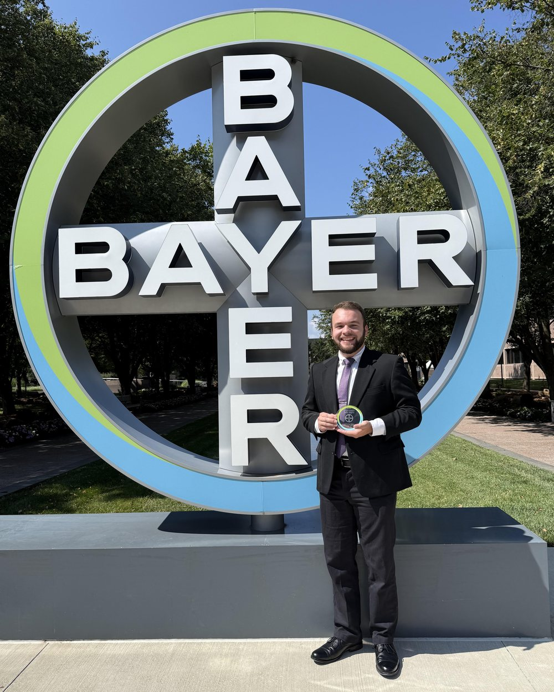

Tyler Pinkowski: From transfer student to a job with Bayer

Tyler Pinkowski transferred to NC State from Johnston Community College. He will graduate in May with a full-time job at Bayer Crop Science already lined up.
It started in an ABM sales workshop, continued at a career fair, and took him to southeast Florida for a summer internship.
A lifelong plan to be in the Wolfpack
Tyler earned an Associate in Science at Johnston Community College in Smithfield, N.C. NC State was always the goal. “Ever since I was in my early teens I always said I was going to go to college at NC State,” he said.
ABM was an easy choice. He loves agriculture, grew up interested in business, and calls himself a natural extrovert. “I’ve always been a fan of how business easily connects me with new people.”
What surprised him most was how fast he made friends. He met another ABM transfer student at orientation, and the two are still close.
A workshop, then a career fair, then Florida
Tyler’s path to Bayer started in ABM’s professional selling workshop, taught by Aaron Messer of Bayer Crop Science. There he learned that Bayer would be at the Ag and Natural Sciences Career Fair. He went, introduced himself at the booth, and got an interview.
He spent the summer of 2026 in southeast Florida as a Crop Science Sales Intern. During the week he shadowed his mentor on sales calls and in meetings with retail managers and customers. He also worked on local field trials that tested how well Bayer’s crop protection products perform in different soil conditions.
The lesson he couldn’t have gotten in class was how closely knit agriculture is. “My mentor knew so many different people from other companies, and was still in contact with customers that he worked with before his tenure with Bayer began.”

Tyler at Bayer’s Crop Science headquarters in Creve Coeur, Missouri.
Field Sales Representative Trainee
This fall, Tyler received a full-time offer from the head of Bayer’s Emerging Talent Program, who had supervised him during the internship.
As a Field Sales Representative Trainee, Tyler will keep learning sales with a mentor and will eventually get his own customer accounts. The program prepares him to become a Field Sales Representative.
He accepted, and he starts around May 17, about two weeks after graduation, with a week of orientation at Bayer’s headquarters in Creve Coeur. He won’t know his sales territory until the end of January 2027.
Why did the internship turn into an offer? Tyler points to what he learned from customers and business partners about what they expect from a salesperson. It helped him find his own selling style. “It was my ability to demonstrate that I can be my own person and be successful by my own merits,” he said.
Don’t wait
Tyler has simple advice for students thinking about transferring into ABM: “Just do it.” He says they’ll find classmates who become friends and instructors and staff who care about their success. The workshop taught him something he considers especially important for transfer students: get involved and try new things.
For everyone else: “Get in touch with those guest speakers, the industry professionals that come to campus for visits, and yes, go to the career fairs and shake hands with as many people as you can.”